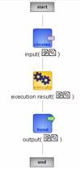
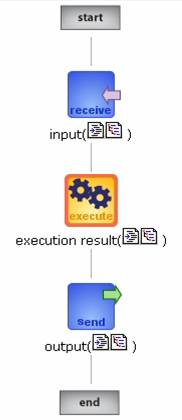
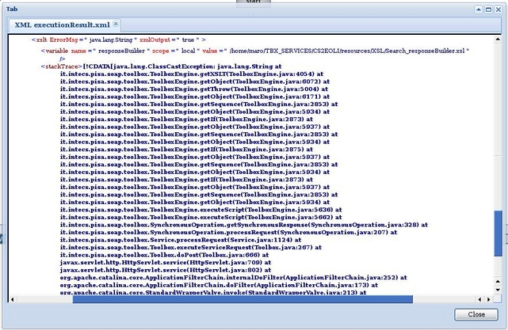
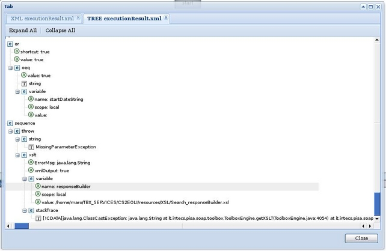

To view the flow diagram of a synchronous instance.
To display the flow diagram retrieve the list the synchronous instances.
Click on the "instance" link of the row you want to monitor.
A page reporting the instance flow should be displayed. Hereafter we report the flow for a completed successful request.

See the flow icon description page for the possible state and meaning of each single task icon.
Each task can have a resource associated:
- The receive task allows displaying the input message by clicking on the icons located just after the task image. The
 icon allow displaying the input message in a tree format. The
icon allow displaying the input message in a tree format. The  icon allows displaying the input message in XML format.
icon allows displaying the input message in XML format. - The execute task allows displaying the result of the execution by clicking on the icons located just after the task image. The icon allow displaying a copy of the XML script tags including some execution results such as variable value in a tree format. The icon allows displaying the execution results in XML format.
- The send task allows displaying the input message by clicking on the icons located just after the task image. The icon allow displaying the output message in a tree format. The icon allows displaying the output message in XML format.
In case of error the flow highlights the task in which the error occurred

If the error occurs during the scripts execution, it is possible to display the error details by clicking on the  or
or  icon. The pop up page will display the execution results (the tags executed with some debug information, e.g. variable values). The last tag is the tag which returned the error. This tag report a short error message as attribute (ErrorMsg) and the complete stack trace (the child tag stackTrace).
icon. The pop up page will display the execution results (the tags executed with some debug information, e.g. variable values). The last tag is the tag which returned the error. This tag report a short error message as attribute (ErrorMsg) and the complete stack trace (the child tag stackTrace).
XML View Tab

XML Tree View Tab

Optionally if the email error report is activated an additional icon can be displayed . By clicking on this icon it is possible to display a copy of the error report email sent to the SSE or to the other recipients defined in the TOOLBOX configuration procedure.